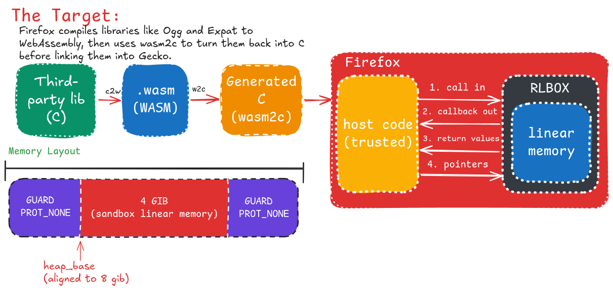
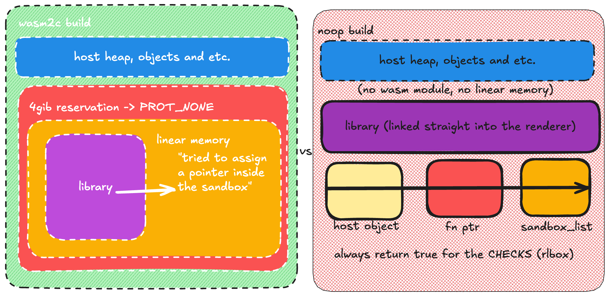
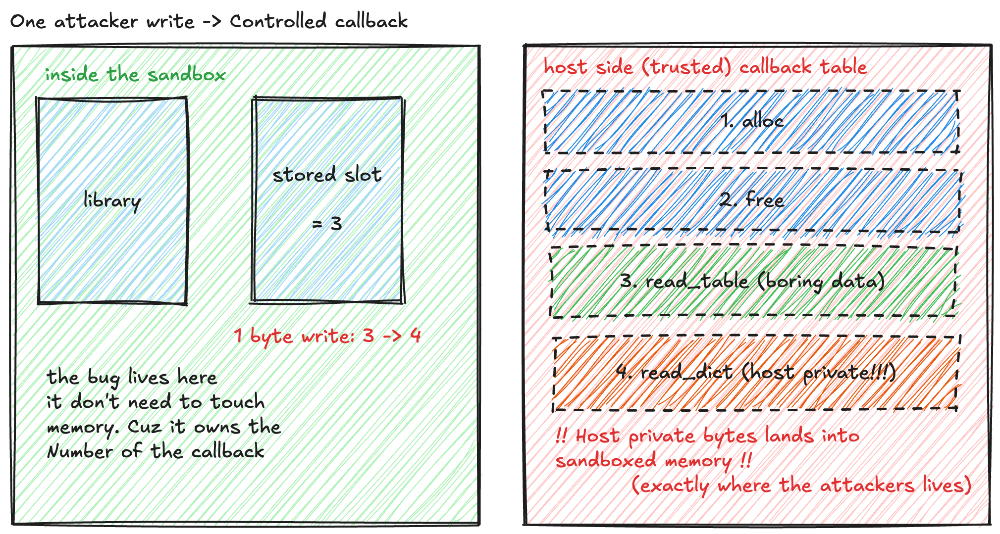

In early September, I finally took some time to look into and understand RLBox (roughly speaking, a WASM "sandbox" for external libraries). And this blog post can help you understand. and perhaps even exploit. a bug that fits this scenario.
Hello World! Have you ever wondered whether browsers (like Firefox) attempt to mitigate vulnerabilities in third-party code that they incorporate (such as external libraries for images, audio, etc.)?? Your favorite browser has likely already considered this. For instance, Google. which is responsible for the development of Chromium. maintains a project called ClusterFuzz (http://issues.oss-fuzz.com/issues?q=) designed to uncover vulnerabilities throughout the entire Chromium supply chain, including within external libraries and Chromium’s own proprietary code. Although Chromium does not "sandbox" these external libraries, it still addresses the issue. Firefox, however, takes a slightly different approach: in addition to using techniques like fuzzing, it employs a sandbox based on an open-source project called RLBox. The focus of this approach is to prevent bugs within certain libraries (such as Graphite, Ogg, Hunspell, etc.) from being exploited to compromise the browser's renderer.
And in this article, that is precisely what we will cover: ways to exploit the wasm2c sandbox. looking at the issues with RLBox more broadly (taking Firefox into account, but focusing primarily on RLBox itself).
Your parser is not your friend
Firefox uses RLBox to sandbox libraries like Ogg, Expat, and WOFF2. The process is interesting: compile C to WebAssembly, translate it back to C using wasm2c, and link it into Gecko. The generated code uses a private linear memory, preventing out-of-bounds accesses from reaching the host process's memory. However, memory isolation doesn't mean the code interacting with the sandbox is safe. There are two interesting attack surfaces:
Callbacks: The sandbox controls which registered callback gets invoked and with what arguments.
Return values: Data coming from the sandbox is untrusted and must be validated by the host. RLBox uses tainted to make these trust boundaries explicit, but the application is still responsible for handling untrusted data correctly.
The interesting part is that RLBox doesn't eliminate bugs. It moves part of the attack surface from the library into the host code that interacts with it.
Obviously, this makes exploitation harder, but it doesn't make it impossible. Maybe from the library's side it does, but we'll see that there are still ways.
How it works?

Here is a diagram I made to explain it. Sorry if it's not very good! It's my first time making one :D
Firefox compiles third party libraries like Ogg and Expat to WebAssembly, then uses wasm2c to convert them back to C before linking them into Gecko. As shown in the diagram, the library runs inside an RLBox sandbox with its own linear memory, isolated from the rest of the renderer. The host and sandbox communicate through four channels: function calls, callbacks, return values and pointers. The memory isolation limits what the library can access, but callbacks and returned data still need to be handled safely by the host. RLBox makes exploitation harder, but the code handling the sandbox's output remains an attack surface.
Building the lab (the lazy way)
For learning purposes and to have more control over what's happening, we'll explore RLBox outside Firefox itself (but maybe I'll release a blog post about exploiting it directly in Firefox when I have time, sorry hehehe). For now, we'll focus on understanding RLBox, exploring its attack surface and testing some techniques into the lab.
Techniques
The Sandbox that isn't
So far we assumed the sandbox is there. Sometimes it isn't.
Firefox can also be built with --without-wasm-sandboxed-libraries, and every big-endian target does the same. In those builds there is no wasm module: the library is linked as normal native code, and RLBox swaps in the noop sandbox, where everything passes straight through.
Firefox's own RLBox docs warn about that build. This is the line that made me go look: "Code that is correct under wasm sandboxing is not automatically correct under the noop sandbox." Then they give one example. One. So I went to see how deep the hole goes.
Open third_party/rlbox/include/rlbox_noop_sandbox.hpp:
impl_is_in_same_sandbox(const void*, const void*) { return true; } // :135
impl_is_pointer_in_sandbox_memory(const void*) { return true; } // :140
impl_get_unsandboxed_pointer(T_PointerType p) { return p; } // :94
These three functions answer one question for RLBox: is this pointer inside the sandbox? Two of them always say yes, and the third hands back the pointer you gave it. They live at :135, :140 and :94.
Now look at who asks:
| what | how it checks | under noop |
|---|---|---|
check_sandbox_pointer_range_is_contained | is_in_same_sandbox(start, end) | always "safe" |
assign_raw_pointer | is_pointer_in_sandbox_memory | always "safe" |
pointer arithmetic, like tainted<T*> + i | is_in_same_sandbox | can go anywhere |
malloc_in_sandbox | both of the above | can go anywhere |
That list is basically all of RLBox's runtime security, and in this build every entry answers "fine, go ahead".
The clearest symptom is UNSAFE_accept_pointer(). Its comment says "This will only ever work in the rlbox_noop_sandbox", which was meant as "don't use this in production". Here it simply works, and a plain host pointer becomes a valid sandbox pointer.
The boundary doesn't get weaker here. It stops existing.

Same source, same bug, two different endings: on the left the overflow dies at the reservation; on the right it walks straight through the host object, the function pointer, and RLBox's own bookkeeping. (I'm getting better at diagrams hehehe :D)
Exploitation walkthrough
The host creates the sandbox. With this backend there is no wasm module and no linear memory, so the "sandbox" is an object holding a handful of callbacks.
To give the library a destination buffer, the host converts one of its own buffers with
UNSAFE_accept_pointer(). RLBox applies its pointer check here,is_pointer_in_sandbox_memory(ptr), and because that check returnstruefor any value, the host object is accepted as sandbox memory.The host invokes the library:
mf_copy_table(dst, dst_cap = 16, src, src_len), wheresrcis attacker-supplied content.The library copies
src_lenbytes and never consultsdst_cap. Because no sandbox memory separates the two, the surplus bytes are written inside the host process, past the end of the destination buffer.Those bytes are attacker-controlled and walk into the fields that follow the buffer. In this object the adjacent field is a function pointer.
Any later call through that pointer (a callback, a destructor, an error handler) executes attacker-chosen control flow inside the renderer.
Thread 2.1 "poc_noop" hit Breakpoint 1.1, mf_copy_table (dst=0x555555566118 <g_host_object> "", dst_cap=0x10, src=0x55555557a460 "MFRT\021", src_len=0x20) at /home/user/rlbox-pesquisa/xpl/t02_backend_asymmetry/../common/minifont.c:140
140 for (i = 0; i < src_len; i++) {
dst = 0x555555566118 <g_host_object> ""
dst_cap = 0x10
src = 0x55555557a460 "MFRT\021"
src_len = 0x20
$1 = {
magic = 0xcafebabe00000000,
fn = 0x555555555c20
}
0x555555566118 <_ZL13g_host_object>: 0xcafebabe00000000 0x0000555555555c20
0x555555566128 <_ZN5rlbox13rlbox_sandboxINS_18rlbox_noop_sandboxEE12sandbox_listE>: 0x000055555557a070 0x000055555557a078
0x0000555555555971 in rlbox::rlbox_noop_sandbox::impl_invoke_with_func_ptr<int(unsigned char*, unsigned int, unsigned char const*, unsigned int), int(void*, unsigned int, void*, unsigned int), void*, unsigned int, void*, unsigned int> (this=0x7fffffffd0b8, func_ptr=<optimized out>, params=<optimized out>, params=<optimized out>, params=<optimized out>, params=<optimized out>) at ../../rlbox/code/include/rlbox_noop_sandbox.hpp:187
187 return (*func_ptr)(params...);
Value returned is $2 = 0x20
$3 = {
magic = 0x115452464d,
fn = 0x4141414100000200
}
0x555555566118 <_ZL13g_host_object>: 0x000000115452464d 0x4141414100000200
0x555555566128 <_ZN5rlbox13rlbox_sandboxINS_18rlbox_noop_sandboxEE12sandbox_listE>: 0x4141414141414141 0x4141414141414141
dstis the address ofg_host_object, confirming that the "sandbox pointer" is the host object itself.The callee is given
dst_cap = 0x10andsrc_len = 0x20: the copy is 32 bytes into a 16-byte buffer.magicandfnchange from the host's values (fn = 0x555555555c20) to attacker data (fn = 0x4141414100000200). This is step 5, and thatfnis the control flow of step 6.The second address in each
x/4gxissandbox_list, RLBox's own registry of live sandboxes, and it also becomes0x4141414141414141. The overflow passes the host object and reaches the bookkeeping of the framework that was supposed to contain it.
Some firefox's baseds software are builtin without the Wasm Sandbox. https://linuxfromscratch.org/blfs/view/git/xsoft/thunderbird.html
Like Thunderbird.
The attacker picks the callback
OK, so far the sandbox was just... not there. Now let's assume it IS there, working perfectly, exactly like the paper promised. The library is inside linear memory, the 4 GiB reservation is up, all the checks actually check. Game over for the attacker? Well... not exactly hehehe.
Here's the thing that took me a second to fully appreciate: the sandbox never sees host function pointers. When the host registers a callback (with register_callback), the library doesn't get the function's address. It gets a number. a slot index into a table that the host keeps on its own side. So whenever the library wants to call back into the host, it basically says: "hey, call slot 3 with these arguments", and the host looks up slot 3 and calls whatever function lives there.
Did you see it? A memory-corruption bug inside the sandbox doesn't need to touch any host memory to cause damage. It just needs to change one number.
To test this, I wrote a small parser library with two callbacks that have the same signature but live in very different privilege domains:
read_table: serves boring font-table data, handles 0–3read_dict: can reach a host-private dictionary blob
registered slots: alloc=1 free=2 read_table=3 read_dict=4
The library stores which slot it should use in its own memory — sandbox memory. Memory the bug can write to. So: one controlled byte write, and the stored selector goes from 3 to 4:
baseline: [read_table] handle 0 -> 'table:cmap'
forgery: stored callback slot is now 4
[read_dict] served handle 4 (56 bytes); read_table hits=0 read_dict hits=1
content: 'HOST-PRIVATE: user-dictionary-path=/home/user/secret.dic'
The library asked for a table. The dictionary handler answered. Host-private bytes land inside sandbox memory . which is exactly where the attacker already lives. No host memory was corrupted, no type was confused, every single check passed... and still the wrong function answered the call, with full host cooperation. :D

One byte changes which door the library knocks on. The host opens it either way. (last diagram of the post, I promise hehehe)
"But wait, doesn't wasm check indirect call types?" It does! If you retarget the slot to a callback with a different signature (like free), wasm2c's call_indirect type check traps with SIGABRT. So the boundary works . it just enforces types, and privilege is not a type. Two functions with the same signature are completely interchangeable as far as the sandbox is concerned, even if one reads public data and the other reads your secrets.
So the design consequence is simple: registering a callback is not a privilege boundary. Any code inside the sandbox can call any registered callback, with any arguments, at any time . which means the callback's own body has to figure out who it's serving, and whether it should serve them at all.
Conclusion: you are the sandbox now
So what did we learn from poking RLBox? First: sometimes the sandbox isn't even there (hello, noop builds). Second: even when it is there, working exactly as designed, the attacker doesn't need to break the walls . they just need to ask for the wrong thing nicely, because the part that decides what to answer is code written by humans, running with full trust, on the wrong side of the moat.
And to be fair (I always try to be): RLBox does what it promises. A bug that in 2018 was a direct renderer RCE at Pwn2Own is now, by itself, contained inside 4 GiB of nowhere. Exploitation went from "one good bug" to "one good bug plus a boundary mistake" . and that raises the price a lot. But "more expensive" is not "impossible", and the boundary is full of interesting mistakes waiting to be found: callbacks that don't check who they're serving, values trusted without validation, builds where the sandbox quietly doesn't exist.
Mitigations don't kill bugs, they tax them. And every tax has someone creative enough to avoid paying it hehehe. So if you take one thing from this post: the sandbox protects the values you validate . so audit the code that does the validating, because you are the sandbox now.
Thanks for reading this far, I hope you learned something (or at least got a new thing to grep hehehe). See you in the next one. Bye! :D
"Every sandbox is a promise. And a promise, like a pointer, is only as trustworthy as whatever checks it."